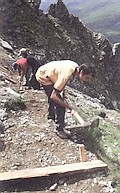

Zes NKBV-leden hebben zich begin juli belangeloos ingezet om het pad naar de enige NKBV-hut in de Alpen - de Wangenitzseehut - te verbeteren. Gelokt door een bericht op de verenigingswebsite hadden zij zich aangemeld voor een werkweek vanuit de hut.
Hun voornaamste werk was het 'reconstrueren' van het laatste stuk van het pad van Seichenbrunn naar de Untere Seescharte. Zeg maar: het effenen van de kortste route naar het jubileumfeest van de hut enkele weken later.

De ploeg werd ondersteund door enkele leden van de sektion Lienz van de OeAV. Een medewerker van het Nationaal Park Hohe Tauern leidde de werkzaamheden. Het pad is voor een klein deel omgelegd: een ander deel is voorzien van een bescherming tegen erosie door water.
De eerste complimenten konden de harde werkers al tijdens de week zelf al incasseren. Volgens 'Einheimischen' was het gereconstrueerde pad een welkome verbetering.